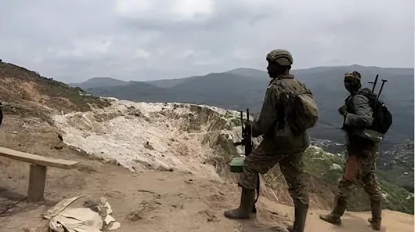

Depuis la prise de Goma en janvier 2025 par le M23 soutenu par Kigali, l'est de la République démocratique du Congo vit sous occupation partielle. Des millions de déplacés, des crimes de guerre documentés, une diplomatie des minerais qui brouille les cartes : la « guerre oubliée » du Congo révèle les contradictions béantes d'un ordre international où cobalt et coltan pèsent plus que les principes.
La guerre qui embrase l'est de la RDC depuis 2021 n'est pas née du néant. Elle s'inscrit dans une séquence de crises qui déchirent la région des Grands Lacs depuis le génocide rwandais de 1994 : afflux de réfugiés hutus porteurs des Forces démocratiques de libération du Rwanda (FDLR), guerres du Congo de la fin des années 1990 et du début des années 2000, puis cycles répétés de rébellions appuyées depuis Kigali. Le Mouvement du 23 mars (M23) est lui-même héritier direct du Congrès national pour la défense du peuple (CNDP), intégré à l'armée congolaise (FARDC) en 2009 avant de se mutiner à nouveau en 2012, puis d'être défait en 2013 et de reprendre les armes en novembre 2021.
L'accusation portée par Kinshasa — et corroborée par de nombreux rapports des Nations Unies — est claire : Kigali soutient militairement le M23, lui fournissant soldats, armes, drones et coordination opérationnelle. Le Rwanda, par la voix du président Paul Kagame, a systématiquement récusé ces accusations, invoquant le danger que représentent les FDLR pour sa sécurité nationale et l'incapacité du gouvernement congolais à gérer l'est du pays.
Dans la nuit du 26 au 27 janvier 2025, après des semaines de progression inexorable, les combattants du M23 et leurs alliés de l'Alliance Fleuve Congo (AFC) entrent dans Goma, un million d'habitants. Les FARDC, appuyées par des casques bleus de la MONUSCO et des contingents de la force régionale SADC (dont des soldats sud-africains), s'effondrent : plus de 2 000 militaires et policiers congolais se rendent, plusieurs centaines de mercenaires européens sont capturés. L'aéroport est immédiatement pris. Vingt casques bleus périssent dans les combats.
Moins de trois semaines plus tard, le 16 février, Bukavu, capitale du Sud-Kivu, tombe à son tour. L'AFC-M23 contrôle désormais les deux capitales provinciales du Kivu. Elle y impose une administration parallèle, démantèle les camps de déplacés en périphérie, force les populations à regagner des villages encore sous menace, et instaure un système fiscal propre. Selon le gouverneur du Sud-Kivu, cité en avril 2026, près de 84 % des recettes provinciales se sont volatilisées, le M23 générant entre 17 et 20 millions de dollars de revenus mensuels à partir des zones occupées.
Le M23 reprend les armes dans le Nord-Kivu, invoquant le non-respect des accords de paix de 2013. L'implication rwandaise est rapidement documentée par les experts de l'ONU.
Offensive continue dans le Nord-Kivu. En mars 2024, le M23 contrôle environ la moitié de la province. Un cessez-le-feu est négocié en août 2024 mais les combats reprennent en octobre après l'annulation du sommet de Luanda.
Prise de Goma. Les FARDC capitulent. Plus de 2 000 soldats se rendent. L'AFC-M23 revendique la ville et ordonne le retrait des forces gouvernementales. La RDC rompt ses relations diplomatiques avec le Rwanda.
Bukavu tombe. Le M23 contrôle les deux capitales provinciales du Kivu. L'ONU et plusieurs ONG dénoncent une crise humanitaire aiguë. Les violences sexuelles augmentent d'un tiers par rapport à 2024, selon l'UNFPA.
Accord de paix RDC–Rwanda signé à Washington sous facilitation américaine, accompagné d'un protocole sur les minerais critiques. Le 19 juillet, une déclaration de principes entre AFC/M23 et Kinshasa établit un cadre de cessez-le-feu — que les deux parties violent rapidement.
Le M23 prend Uvira (Sud-Kivu) en décembre, provoquant la fuite de plus de 500 000 personnes en une semaine. Il se retire le 17 janvier 2026 sous pression américaine, mais les combats reprennent dans les environs. Des fosses communes sont découvertes et attribuées à l'AFC/M23 et aux forces rwandaises par les autorités congolaises et HRW.
Les lignes de front se stabilisent au Nord-Kivu malgré des combats réguliers. Le 24 février, une frappe aérienne des FARDC tue Willy Ngoma, porte-parole militaire du M23. En mars, une frappe sur un quartier résidentiel de Goma tue trois civils dont une employée de l'Unicef, déclenchant l'ouverture d'une enquête pour crime de guerre par la justice française.
Corneille Nangaa, coordinateur politique de l'AFC/M23, adresse une lettre au secrétaire d'État américain Marco Rubio, accusant Washington de partialité depuis la signature de l'accord sur les minerais et dénonçant les violations des engagements de Montreux (18 avril 2026) par Kinshasa.
Derrière la rhétorique sécuritaire se déploie une réalité économique brutale. La RDC concentre 60 à 80 % des réserves mondiales de cobalt et environ 80 % du coltan mondial — minéral dont sont extraits le niobium et le tantale, indispensables à la fabrication de batteries, smartphones, satellites et alliages aéronautiques. L'est du pays, théâtre des combats, est précisément la zone la plus riche en ces ressources stratégiques.
L'AFC-M23 a mis en place une administration parallèle dans les zones occupées qui contrôle l'extraction, le commerce, le transport et la fiscalité des minerais. Selon un rapport de l'ONU cité par des chercheurs, au moins 150 tonnes de minerais seraient exportées illégalement chaque année depuis ces zones, alimentant une économie de guerre profitable, notamment au Rwanda. Les exportations rwandaises de tantale vers les États-Unis avaient été multipliées par quinze entre 2013 et 2018 — après la première invasion du M23 — alors même que le Rwanda ne dispose que de ressources minières propres très limitées.
Le bilan humain est vertigineux. Plus de 700 000 personnes ont été déplacées entre janvier et février 2025 lors des offensives sur Goma, Bukavu et leurs environs. En décembre 2025, la nouvelle offensive au Sud-Kivu fait fuir plus de 500 000 personnes en une semaine. Le HCR estime que le pays pourrait compter 9 millions de déplacés internes fin 2026 si le conflit se poursuit au rythme actuel. Un Congolais sur quatre — soit 26,6 millions de personnes — ne peut satisfaire ses besoins alimentaires de base, selon le Programme alimentaire mondial.
Human Rights Watch a publié le 13 mai 2026 un rapport documentant des crimes de guerre commis par le M23 et les forces rwandaises à Uvira entre décembre 2025 et janvier 2026, lors de la prise puis de l'occupation de la ville. Le viol est utilisé comme arme de guerre : les violences sexuelles ont augmenté d'un tiers en 2025 par rapport à 2024, selon l'UNFPA.
| Acteur | Rôle | Position mai 2026 |
|---|---|---|
| AFC / M23 | Rébellion armée | Contrôle Goma, Bukavu, zones du Kivu |
| Rwanda (FDR) | Soutien militaire M23 | Présence contestée, déniée par Kigali |
| FARDC | Armée congolaise | Stabilisation partielle, usage de drones |
| MONUSCO / ONU | Maintien de la paix | Retrait progressif en cours |
| États-Unis | Médiateur / accord minerais | Crédibilité questionnée (lettre Nangaa) |
| Qatar / Togo / Suisse | Co-médiateurs (Doha) | Processus de paix en cours, fragile |
Le processus de paix de Doha, initié en mars 2025, a abouti le 19 juillet 2025 à une déclaration de principes entre le gouvernement congolais et l'AFC/M23. Mais aucune des deux parties n'a tenu ses engagements de manière stable. Le 18 avril 2026, les discussions de Montreux produisent de nouveaux engagements — dont la libération de 317 détenus sous dix jours. Kinshasa ne l'honore pas. Simultanément, les bombardements par drones se poursuivent dans les zones sous contrôle du M23, et plusieurs tentatives d'assassinat ciblant des cadres de l'AFC sont documentées par le mouvement.
La lettre de Corneille Nangaa à Marco Rubio du 7 mai 2026 frappe par sa virulence diplomatique : elle accuse Washington de s'être laissé aveugler par ses intérêts miniers depuis la signature du protocole d'entente avec Kinshasa, appliquant une logique à deux vitesses — sanctions pour certains responsables congolais, tolérance pour Tshisekedi. Elle met en copie le président togolais Gnassingbé, le médiateur qatari Al-Khulaifi, la facilitation suisse et le conseiller spécial américain Massad Boulos, contraignant chaque médiateur à justifier publiquement sa posture.
« Indiscutablement, l'implication des États-Unis dans les affaires congolaises a toujours été liée à un objectif de garantir l'accès aux minéraux critiques. »
— Frédéric Mousseau, directeur des politiques à l'Oakland Institute, octobre 2025La guerre de l'est de la RDC est l'un des conflits les plus meurtriers et les plus complexes de la planète, et pourtant l'un des moins couverts. Elle combine une rébellion armée soutenue de l'extérieur, une prédation systématique des ressources naturelles, une crise humanitaire parmi les pires au monde, et un processus de paix dont la sincérité est minée par les intérêts économiques des médiateurs eux-mêmes. Tant que le cobalt et le coltan des Kivu alimenteront les chaînes d'approvisionnement mondiales sans que les conditions de leur extraction soient questionnées, la guerre ne sera pas seulement celle de Tshisekedi contre Kagame ou des FARDC contre le M23 : elle sera aussi, par omission, celle d'un monde qui choisit de ne pas voir.